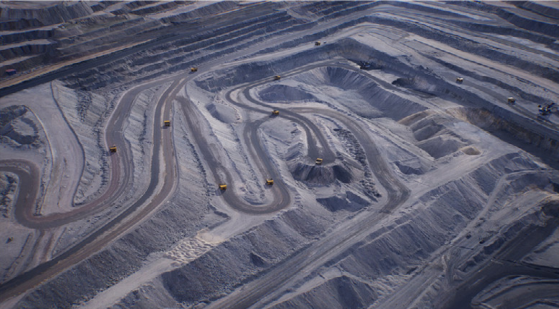
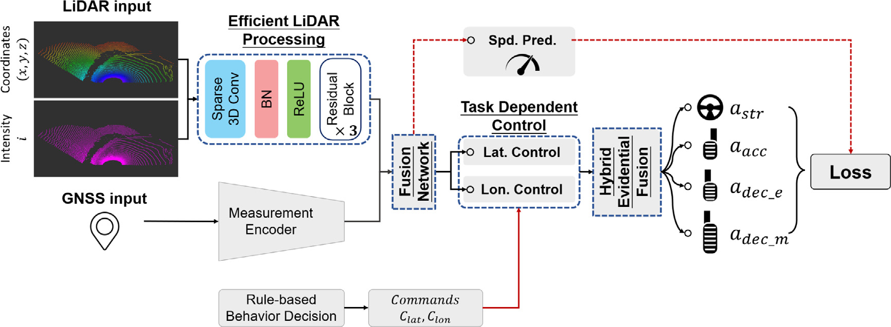
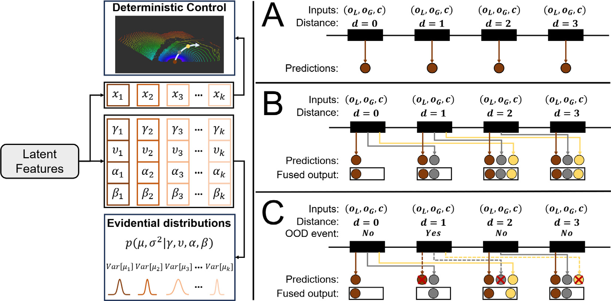
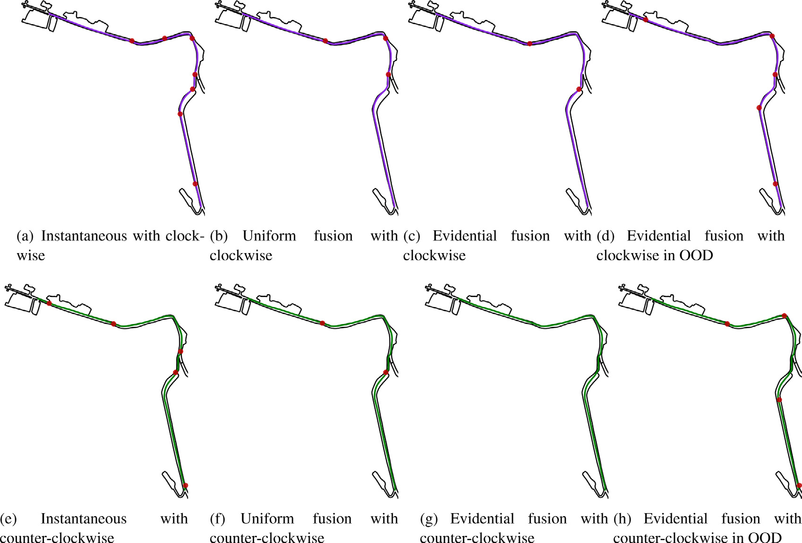
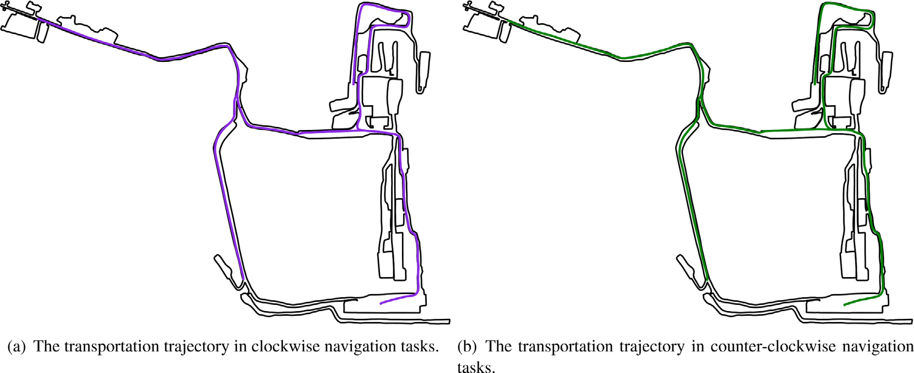
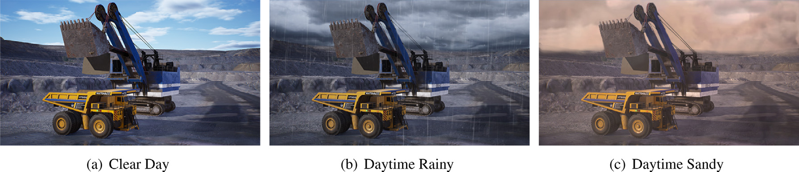

FusionPlanner
A planner designed for mining trucks. Shared sensor features, task-dependent control and uncertainty-aware execution.
Explore the method →A multi-task motion planner for mining trucks
via multi-sensor fusion.

Sparse features. Blurred boundaries. Demanding conditions. Open-pit mines need a different approach to autonomous driving.
FusionPlanner brings perception, planning and control together in an end-to-end imitation learning framework. It combines LiDAR geometry with GNSS localization, learns lateral and longitudinal control jointly, and uses evidential uncertainty to fuse predictions over time.
面向露天矿非结构化道路，通过多传感器融合、多任务控制与不确定性感知，提升无人矿卡运输的稳定性与可靠性。
A planner designed for mining trucks. Shared sensor features, task-dependent control and uncertainty-aware execution.
Explore the method →A domain-specific benchmark testing lane stability, recovery from disturbances and intersection navigation.
See the evaluation →A high-fidelity environment for sensor simulation, single-truck control and multi-truck operations.
Inside the simulator →Fuse complementary observations.
Learn coupled tasks. Act on confidence.

0.2 m voxels and residual sparse convolution blocks with 16, 32 and 64 channels extract geometric features.
LiDAR features and encoded GNSS measurements form a shared representation, conditioned by high-level commands.
Learned task uncertainties balance lateral steering and longitudinal control losses during joint training.
Evidence estimates the uncertainty of future controls. Predictions from multiple frames are fused by confidence.
The epistemic variance is estimated as Var[μ] = β / [ν(α − 1)]. Inverse variance provides a confidence weight for temporal command fusion. The paper compares instantaneous execution, uniform fusion and evidential fusion (Section 3.4).

Paper Fig. 3. Conceptual execution modes; this website does not run the trained planner.
Three closed-loop tasks evaluate robustness
on unstructured transportation roads.
Maintain the reference lane on a two-way transportation road. The reported experiment uses a 1,500 m route.
METRIC / Collisions & interventionsRecover after a heading perturbation of ±10° and a lateral offset of ±1 m. Return to the reference line within 20 s.
METRIC / Recovery success rateReach a destination at least 1,000 m away, including an intersection, on an 11 km transportation network.
METRIC / Intervention-free turnsTemporal fusion improves recovery over instantaneous execution across the three road configurations.
Simulation results transcribed from the supplied paper. These are not evaluations of the supplementary instruction datasets below.
| Execution mode | Straight | Left turn | Right turn |
|---|---|---|---|
| Instantaneous | 75% | 63% | 44% |
| Uniform fusion | 89% | 73% | 59% |
| Evidential fusion | 90% | 71% | 61% |
The source table’s “Average” values do not match the arithmetic means of its three displayed columns; that column is omitted here. Bold values indicate the best result per configuration.


One environment. Multiple sensing modalities.
From a single truck to coordinated operations.

Simultaneous mining trucks
per mine, as reported
LiDAR lines across
six sensor types
Semantic classes
for camera labels
Single-server architecture
with configurable environments
PMS capabilities are described in Section 5 of the paper. Simulator binaries and training weights are not included in this repository.
Real records from the accompanying workspace.
Inspectable samples. Traceable provenance.
The browser includes five deterministic samples per bundle (first, quarter, midpoint, three-quarter, last). The trajectory is the stored label, not a live model prediction. Axes use metres; +X is forward and +Y is left. Only lane, history and future-label coordinates are plotted.
| Dataset | Records | Size | Variant | Download |
|---|
All 16 original JSON files were parsed. Eight exceed 10,000,000 bytes (decimal MB). Six exceed 10 MiB. Two pairs are byte-for-byte duplicates and are represented once in the downloadable bundles. The smaller PengCoT S3 NoCoT file is retained as a paired variant.
The seven bundles total 70,000 records across representations and ablation variants. This is not a count of distinct scenes. No train/test separation is inferred beyond source filenames, and no absence of overlap is claimed. “S1” is a catalogue label for the base PengCoT folder, not a verified split annotation.
Full JSON files are distributed unchanged as release assets; names are normalized, and original workspace paths, byte sizes and SHA-256 hashes are retained in the manifest. No dataset license was present in the inspected workspace; no new usage license is asserted. Confirm reuse terms with the authors.
数据目录保留原始文件路径、精确字节数及 SHA-256；完整数据不随首页加载，按需下载。
If this research informs your work,
please cite the published paper.
@article{teng2024fusionplanner,
title = {FusionPlanner: A multi-task motion
planner for mining trucks via multi-sensor fusion},
author = {Teng, Siyu and Li, Luxi and Li, Yuchen
and Hu, Xuemin and Li, Lingxi and Ai, Yunfeng
and Chen, Long},
journal = {Mechanical Systems and Signal Processing},
volume = {208},
pages = {111051},
year = {2024},
doi = {10.1016/j.ymssp.2023.111051}
}